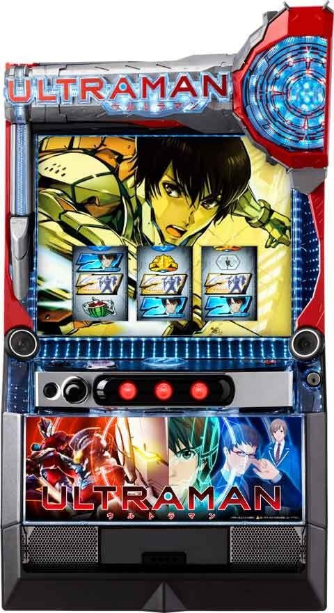
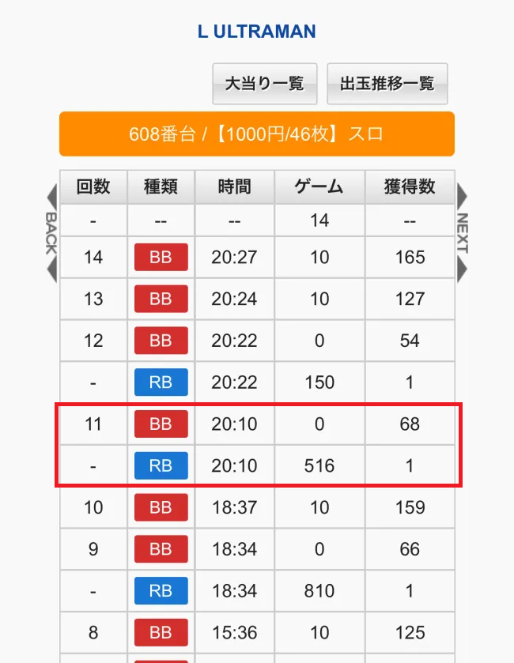
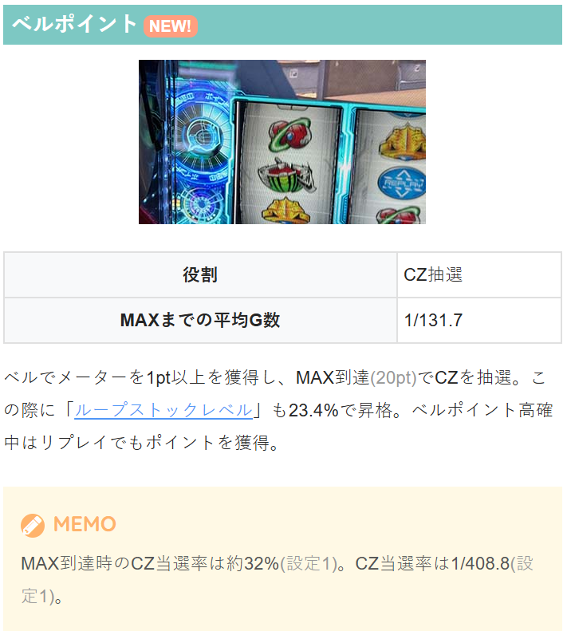
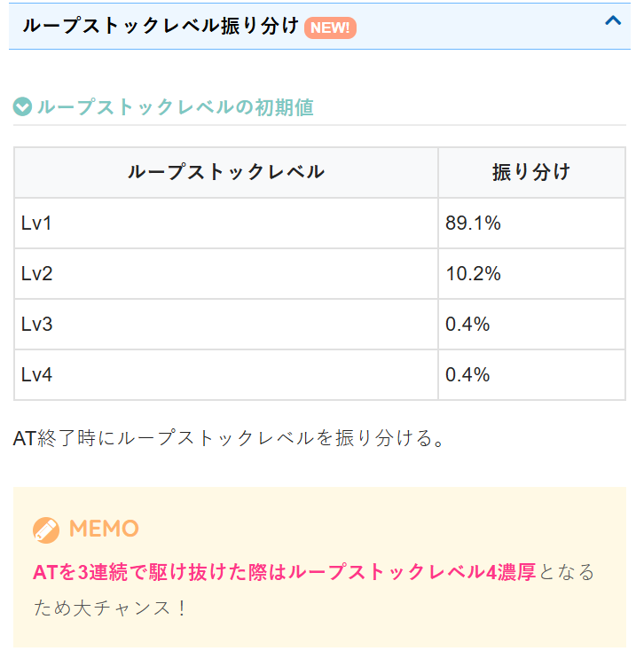
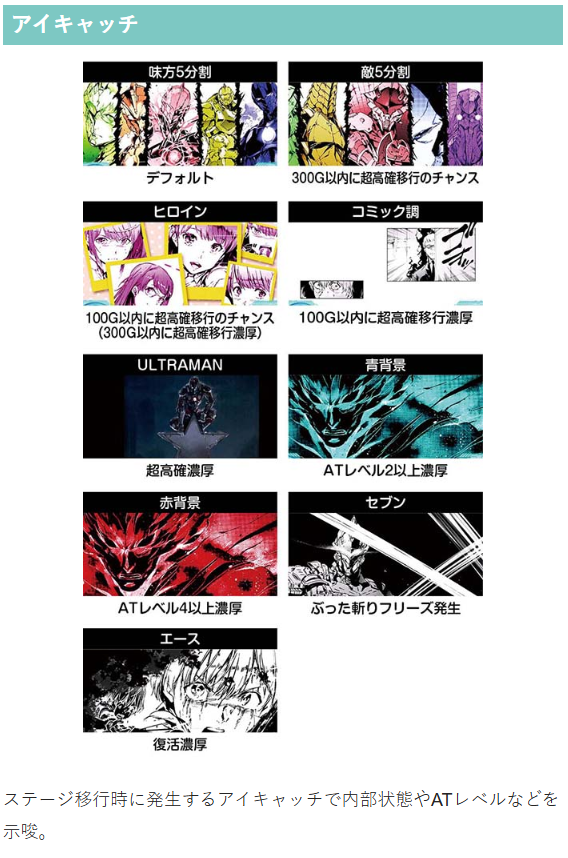
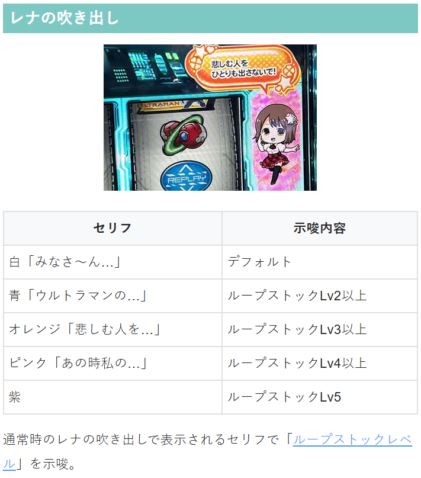
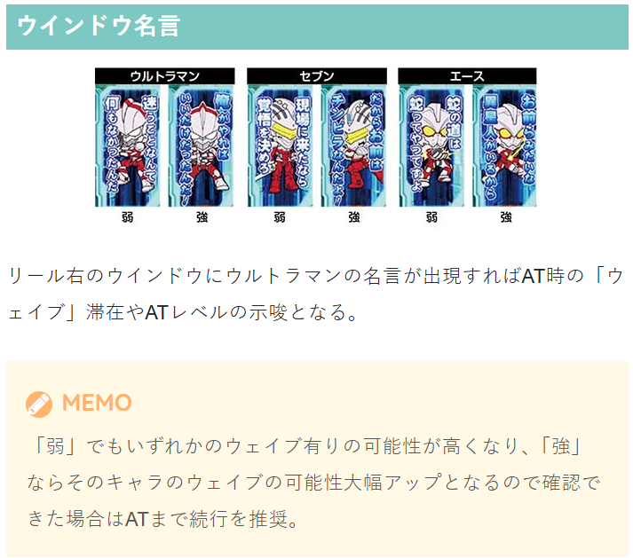
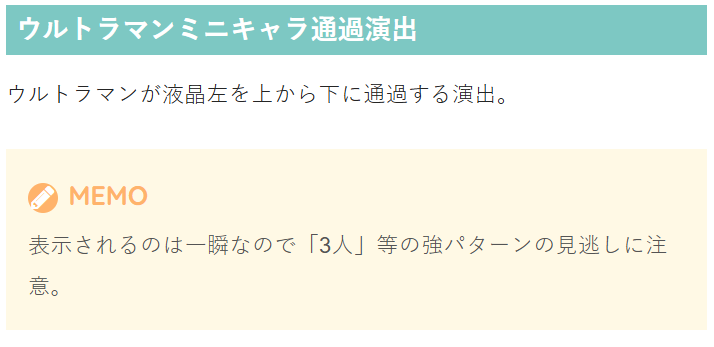
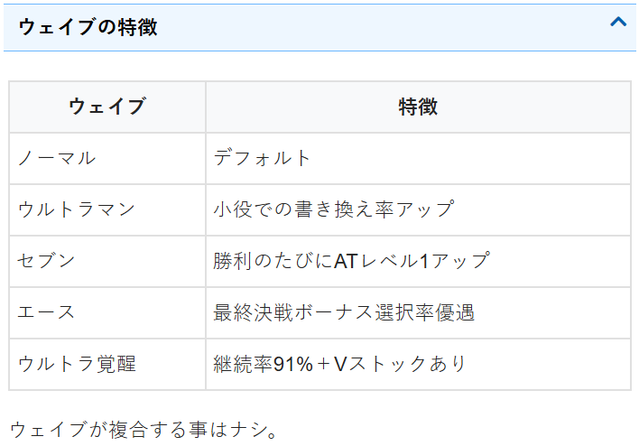

L ULTRAMAN

【天井情報】
通常時は最大998G＋α消化でATに当選。
設定変更時は天井G数が666G+αに短縮。
【リセット判別】
不明
【有利区間について】
不明
狙い目
【リセット狙い】
80G
【ゲーム数天井狙い】
620G（ベルポイント等条件が悪い想定）
駆け抜け2連続後（駆け抜け時次回も続行想定） 500Gから
駆け抜け3連続後以上 0Gから
【超高確狙い】
内部的にAT当選まで継続する。超高確はAT当選まで？
アイキャッチ
ULTRAMAN AT当選まで
コミック調（100G以内に超高確移行濃厚） AT当選まで？
ヒロイン（300G以内に超高確移行濃厚） 100G以内に出現時はAT当選まで？
※天井以外の超高確移行抽選は主に100、400Gとなるため、100G以内にヒロイン出現は100Gでの超高確移行濃厚？
【ループストックレベル狙い】
レベル4はAT当選まで？
3回連続駆け抜け時はレベル4濃厚。
レナの吹き出しピンクセリフはレベル4以上、紫セリフはレベル5濃厚？
【ATレベル狙い】
赤背景アイキャッチはATレベル4以上示唆
ウインドウ名言やミニキャラ通過演出でも示唆がある。
【ベルポイント狙い】
20ptで天井。規定pt到達でCZ抽選。
リール左側に表示。
赤色 5ptから
青色 15ptから
水色（デフォルト。帯電無し） 18ptから
【ウインドウ名言、ミニキャラ通過狙い】
ウルトラマンの名言で強の示唆が出るとAT開始時のATレベルが高い？
ボーダー下げたり、他の示唆を絡めてATまでの様な狙い目になりそう。
ミニキャラ通過演出で3人通過はウェイブやATレベルの示唆として強そう。
【有利区間関連狙い】
差枚+1500枚以上 0Gから100Gくらいまで回して超高確の示唆があれば続行する感じ？またはベルポイントやATレベル等で強めの示唆が出れば強気に攻める？
※有利区間切断条件不明。差枚が+2400枚超えていたり、明らかに一撃で出てるような台はやめた方が無難？
やめ時
AT終了後に1G回してヤメ。1G目のレア役はAT濃厚。
AT終了後、夜のビル街移行は超高確示唆？
上位AT後はリミットブレイクをフォロー。
その他
駆け抜け履歴
下記データ20:10が駆け抜け履歴








参考元
基本情報
- メーカー: OK!!
- 機械割: 97.7% 〜 114.9%
- 導入開始日: 2025年06月02日（月）
- ゲーム性概要: ●純増約4.0枚/GのAT機でULTRAMANが登場 ●通常時はCZやレア役からATを目指すゲーム性 ●AT「ウルトラバトルモード」はバトル勝利でボーナス濃厚 ●上位AT「リミッター解除」の継続率は約93%


打ち方
打ち方・小役
打ち方（小役狙い）
［最初に狙う絵柄］ 左リール上段付近にBARを目押し。スイカがスベってきた場合のみ、中＆右リールにスイカを目押ししよう。

［スイカ停止時］ ウルトラ目や超ウルトラ目の可能性もあるので、中＆右リールともにデカリミ狙いを推奨。デカリミを狙えばスイカもフォローできる。

［強い演出発生時はデカリミを狙おう］ BAR下段停止時やチェリー停止時も、強めの演出が発生していた場合は中＆右リールにデカリミを狙ってみよう。ウルトラ目と超ウルトラ目を判別可能だ。

［レア役の停止例］ ウルトラ目・超ウルトラ目は停止時に派手めなフラッシュが発生。基本的にデカリミ1個ならウルトラ目、2個なら超ウルトラ目になる。

［左リールデカリミ狙いもあり］ 左リール枠内にデカリミを狙ってもチェリーはこぼさないので、デカリミ狙いもあり。枠内にデカリミが停止すればウルトラ目or超ウルトラ目濃厚だ。

［デカリミ狙え］ 通常時に発生すればウルトラ目停止のチャンス！

変則押しはNG
通常時のナビなし時は左1stでの消化を推奨だ。

解析情報通常時
小役関連
デカリミを狙え
通常時のデカリミを狙え発生時にデカリミが止まればウルトラ目or超ウルトラ目濃厚なので、AT当選の大チャンス。高確以上滞在中ほど発生しやすい（フェイク含む）。

通常時のデカリミを狙え抽選値まとめ
| 滞在状態 | 発生確率 | デカリミ停止確率 | AT期待度 |
|---|---|---|---|
| 通常 | 1/361.7 | 1/16098.9 | 40.0% |
| 高確 | 1/26.9 | 1/132.5 | 40.0% |
| 超高確 | 1/36.2 | 1/94.9 | 90.0% |
［設定差あり］小役確率
CZ中など、レア役の一部は中押しカットインに変換される場合がある。
［設定差なし］小役確率
| 役 | 確率 | |
|---|---|---|
| リプレイ | 1/7.3 | |
| ウルトラ目 | チェリー停止から | 1/385.5 |
| ウルトラ目 | スイカスベリから | 1/618.3 |
| ウルトラ目 | BAR下段停止から | 1/799.2 |
| 超ウルトラ目 | チェリー停止から | 1/16384.0 |
| 超ウルトラ目 | スイカスベリから | 1/16384.0 |
| 超ウルトラ目 | BAR下段停止から | 1/16384.0 |
※チェリー停止・スイカスベリ・BAR下段は左リールBAR狙い時の停止形
小役合算確率
| 設定 | 弱レア役 | ウルトラ目 | 超ウルトラ目 | 全合算 |
|---|---|---|---|---|
| 1 | 1/41.4 | 1/164.6 | 1/5461.3 | 1/32.8 |
| 2 | 1/42.3 | 1/150.8 | 1/5461.3 | 1/32.8 |
| 4 | 1/42.5 | 1/148.4 | 1/5461.3 | 1/32.8 |
| 5 | 1/42.6 | 1/147.3 | 1/5461.3 | 1/32.8 |
| 6 | 1/42.7 | 1/146.4 | 1/5461.3 | 1/32.8 |
内部状態関連
ポイント高確概要
ベルの一部で移行する、ベルポイントの高確状態。メーター周囲に「ポイント高確率中」と表示され、滞在中はリプレイでも1pt以上、ベルなら2pt以上を獲得できる。

ポイント高確性能
| 項目 | 内容 |
|---|---|
| 移行契機 | ベル成立時の12.5%（設定1） |
| 滞在中の抽選 | 獲得ポイントが最低2ptにアップ、 ベルだけでなくリプレイでもポイント獲得 |
| 終了条件 | リプレイ成立時に終了を抽選 |
高確・超高確
高確・超高確はレア役時のAT当選率がアップする状態で、高確はハズレ・チェリー・スイカから移行する可能性があり、スイカ契機での移行はロング継続に期待できる。 超高確は規定ゲーム数消化時に移行してAT当選まで継続する。

高確・超高確性能
| 項目 | 内容 |
|---|---|
| 移行契機 | 高確はハズレ・チェリー・スイカ時の抽選、 超高確は規定ゲーム数消化時に移行 |
| 滞在中の抽選 | レア役時のAT当選率がアップ |
| 保障ゲーム数 | 最低10G（超高確はAT当選まで継続） |
高確移行率
| 役 | 移行率 |
|---|---|
| ハズレ | 1.6% |
| チェリー | 40.2% |
| スイカ | 20.3% |
高確移行時の高確ゲーム数振り分け
| ゲーム数 | ハズレ目契機 | チェリー契機 | スイカ契機 |
|---|---|---|---|
| 10G | 66.7% | 69.9% | 一 |
| 20G | 一 | 27.2% | 一 |
| 30G | 33.3% | 1.9% | 84.6% |
| 50G | 一 | 一 | 11.5% |
| 100G | 一 | 1.0% | 3.8% |
AT当選率
［レア役契機］AT当選率（設定1）
| 役 | 通常滞在時 | 高確滞在時 | 超高確滞在時 |
|---|---|---|---|
| 弱レア役 | 0.2% | 7.9% | 50.7% |
| ウルトラ目 | 19.5% | 39.1% | 100% |
| 超ウルトラ目 | 100% | 100% | 100% |
超高確中は弱レア役でも50%以上でATに当選する。
前兆中の書き換え抽選
ATのフェイク前兆中は本前兆への書き換えを、本前兆だった場合はVストックの獲得を抽選する。

前兆中の書き換え・本前兆中のVストック当選率
| 役 | 当選率 |
|---|---|
| 弱レア役 | 弱 |
| ウルトラ目 | 中 |
| 超ウルトラ目 | 濃厚 |
ベルポイント
ベルポイント概要
通常時はベル成立時に加算されるベルポイントMAX（20pt）時にCZを抽選。 ベルの一部でポイント高確へ移行して、高確中はリプレイでもポイントを獲得できる。 ポイントはリールの左側に表示されている。

ベルポイント性能
| 項目 | 内容 |
|---|---|
| 獲得契機 | ベル成立時またはポイント高確中のリプレイ成立時 （ベル成立で1pt以上、ポイント高確中のベルは2pt以上） |
| ポイント MAX時の恩恵 | 20pt到達でCZおよびVSLレベル昇格抽選 |
| MAXまでの 平均ゲーム数 | 約131G |
ベルポイント抽選値（設定1）
| 項目 | 抽選値 |
|---|---|
| MAXになる平均確率 | 1/131.7 |
| CZ確率 | 1/408.8 |
| MAX時のCZ当選率 | 約32% |
［ジャッジメント］ 20pt到達時はジャッジメントが発生してCZの当落を告知。ジャッジメント→前兆ステージ移行から告知されるケースも多い。

［非ポイント高確滞在時］ベルポイント振り分け
| 設定 | 1pt | 2pt | 4pt | 6pt |
|---|---|---|---|---|
| 1 | 88.1% | 9.6% | 1.6% | 0.8% |
| 2 | 87.7% | 9.9% | 1.6% | 0.8% |
| 4 | 87.4% | 10.3% | 1.6% | 0.8% |
| 5 | 87.0% | 10.6% | 1.6% | 0.8% |
| 6 | 86.3% | 11.3% | 1.6% | 0.8% |
［ポイント高確滞在時］ベルポイント振り分け
| ベルポイント | 振り分け |
|---|---|
| 1pt | 一 |
| 2pt | 89.8% |
| 5pt | 7.8% |
| 6pt | 1.6% |
| 10pt | 0.4% |
| 20pt | 0.4% |
ベル成立で1pt以上、高確率中なら2pt以上を獲得。非ポイント高確中は最大6pt（若干だが高設定ほど2ptを獲得しやすい）だが、ポイント高確中は一度に10ptまたは20ptを獲得できる可能性がある。
20pt到達時のCZ当選率（設定1）
| ベルポイント | 当選率 |
|---|---|
| 20pt到達時 | 約32% |
CZ当選時の振り分け
| CZ種別 | 振り分け |
|---|---|
| レッドゾーン | 96.8% |
| レナチャンス | 3.2% |
CZ当選時の大半はレッドゾーンだ。
20pt到達時のVSLレベル昇格率
| ベルポイント | 昇格率 |
|---|---|
| 20pt到達時 | 23.4% |
CZ当否不問でVLSレベルの昇格も抽選する。
VSLレベル・ATレベル
VSLレベル
【AT当選時の継続率に影響】 初当り時にVストックをループ抽選で獲得する4段階のレベル。設定変更時orAT終了時に初期レベルが抽選され、ベルポイントMAXごとにレベル昇格が抽選される。 Vストックの獲得はオープニングボーナス開始時にVSLレベルを参照して抽選する。
VSLレベルごとのVストック当選率＆ループ率
| VSLレベル | 当選率＆ループ率 |
|---|---|
| 1 | 0.4% |
| 2 | 25.0％ |
| 3 | 50.0％ |
| 4 | 80.1％ |
※Vストック個数は最大10個
AT終了時のVSLレベル振り分け （AT3連続駆け抜け時除く）
| VSLレベル | 振り分け |
|---|---|
| 1 | 89.1% |
| 2 | 10.2% |
| 3 | 0.4% |
| 4 | 0.4% |
AT3連続駆け抜け時のVSLレベル振り分け
| VSLレベル | 振り分け |
|---|---|
| 1 | 一 |
| 2 | 一 |
| 3 | 一 |
| 4 | 100% |
AT駆け抜けが3回続いた場合は必ずレベル4になるため、狙い打つ価値アリだ。
96G以内の超高確当選時・VSLレベル振り分け
| VSLレベル | 設定１ | 設定２ | 設定４ | 設定５ | 設定６ |
|---|---|---|---|---|---|
| 1 | 50.0% | 48.4% | 32.8% | 18.0% | 12.5% |
| 2 | 38.3% | 39.1% | 39.8% | 40.6% | 41.4% |
| 3 | 10.9% | 10.9% | 23.4% | 33.6% | 36.7% |
| 4 | 0.8% | 1.6% | 3.9% | 7.8% | 9.4% |
96G以内（32or64or96G）に超高確へ移行した場合はVSLレベルが大きく優遇される。
VSLレベル昇格率
ベルポイント20pt到達時はCZ抽選だけでなく、VSLレベルのアップも抽選する。
VSL…Vストックループレベル
ATレベル
ATの継続率を管理する6段階のレベルで、設定変更時orAT終了時に抽選。設定変更時は高レベルが選ばれやすいため、1回目のATはチャンスといえる。
ATレベルごとの継続率（書き換え込み）
| ATレベル | 継続率 |
|---|---|
| 1 | 約60% |
| 2 | 約64％ |
| 3 | 約69％ |
| 4 | 約74％ |
| 5 | 約82％ |
| 6 | 約91％ |
ATレベル振り分け
| ATレベル | 設定変更時 | AT終了後 |
|---|---|---|
| 1 | 32.0% | 52.9% |
| 2 | 23.0% | 22.1% |
| 3 | 22.0% | 16.2% |
| 4 | 14.7% | 5.5% |
| 5 | 6.4% | 2.4% |
| 6 | 1.9% | 0.9% |
CZ（レッドゾーン/レナチャンス）
レッドゾーン（CZ）
狙え演出でデカリミが止まればATのチャンスとなる15GのCZ。デカリミ停止時はタイマー演出が発生して、タイマーが長いほど上位の恩恵に期待できる。

レッドゾーン（CZ）性能
| 項目 | 内容 |
|---|---|
| 移行契機 | ベルポイントMAX時の抽選 |
| 継続ゲーム数 | 15G |
| 滞在中の抽選 | デカリミ狙えでデカリミが停止すれば 黄金の城塞（前兆）orATorロングフリーズ |
| デカリミ停止期待度 | 48.8% |
| その他 | 15G間でデカリミ狙えが 一度も発生しなかった場合は15Gを再セット |
デカリミ狙え確率
| 状況 | 確率 |
|---|---|
| 1回目 | 1/4.3 |
| 2回目以降 | 1/7.1 |
| トータル | 1/5.7 |
デカリミ停止時の発展先割合
| 発展先 | 割合 |
|---|---|
| 黄金の城塞 | 52.6% |
| AT | 47.0% |
| ロングフリーズ | 0.4% |
［デカリミ狙え］

［タイマー演出］

パターンごとの期待度はコチラ
レナチャンス（上位CZ）
狙え演出で7が揃えばAT濃厚になる15G間の高期待度CZ。AT当選時はVストックを1つ獲得できる。 2種類の告知タイプを任意に選択できるところもポイントだ。

レナチャンス（CZ）性能
| 項目 | 内容 |
|---|---|
| 移行契機 | ベルポイントMAX時の抽選 |
| 継続ゲーム数 | 15G |
| 滞在中の抽選 | 青7狙えで青7が揃えば AT＋Vストック1個獲得 |
| 成功期待度 | 49.5% |
| その他 | 15G間で青7狙えが 一度も発生しなかった場合は15Gを再セット |
青7狙え確率&期待度（チャンス告知時）
| 項目 | 抽選値 |
|---|---|
| 確率 | 1/5.2 |
| 青7揃い期待度 | 17.0% |
［告知タイプ選択］ チャンス告知とパトレナ告知の2種類から選択できる。

［チャンス告知：青7狙え］ 青＜緑＜赤の3種類。

［パトレナ告知：パトランプ点灯］ パトランプが光ればAT濃厚だ。

パターンごとの期待度はコチラ
フリーズ
ロングフリーズ
超ウルトラ目の一部で発生。高設定ほど発生しやすい。 発生時は実戦上、リミッター解除（上位AT）突入濃厚だ。


ロングフリーズ発生率＆確率
| 設定 | 超ウルトラ目成立時の発生率 | 確率 |
|---|---|---|
| 1 | 6.3% | 1/78484.1 |
| 2 | 7.0% | 1/69138.8 |
| 4 | 7.8% | 1/61976.5 |
| 5 | 8.6% | 1/53752.9 |
| 6 | 10.9% | 1/47541.8 |
ロングフリーズ動画
超ウルトラ目の一部で発生し、上位ATへ直行。通常時は高設定ほど発生しやすい。
解析情報ボーナス時
ウルトラバトルモード（AT）
AT概要
8G間のバトルパートと、勝利時のボーナスパートのループで構成されたバトル形式のAT。初当り時はオープニングボーナスを経由して突入する。 ループ率は約60〜91%で、6段階のATレベルで管理。さらに、5種類のウェイブによってAT性能が変化する仕様だ。 最大10戦でリミッター解除をかけた最終決戦へ突入する。

ウルトラバトルモード（AT）性能
| 項目 | 内容 |
|---|---|
| 移行契機 | ボーナス終了後 （初当り時はオープニングボーナスを経由） |
| 継続ゲーム数 | 8G |
| 純増 | 約0.7枚/G |
| 継続期待度 | 60%～91%（書き換え込み） |
| 消化中の抽選 | リプレイ・レア役で書き換え抽選 |
| 勝利後 | ボーナスへ |
| その他 | 継続期待度はATレベルとウェイブで変化、 10戦突破で最終決戦濃厚 |
［対戦相手で勝利期待度変化］

対戦相手
| 異星人 | 勝利期待度序列 |
|---|---|
| ベムラー | 低 |
| エースキラー | ↓ |
| ブリス | ↓ |
| エイダシク | ↓ |
| ベロクロン | 高 |
［3種類の告知タイプを選択可能］ ボーナス終了時に選択できる。

告知タイプ
| 告知タイプ | 特徴 |
|---|---|
| バトルモード | 敵異星人撃破でボーナスとなる基本モード |
| 違和感モード | 違和感発生や敵異星人撃破でボーナス |
| 沖レナモード | レナフラッシュ発生や星役モノ点灯でボーナス |
［リプレイ・レア役時のカットイン］ リプレイやレア役が成立したゲームではカットイン（青＜赤＜金）で書き換え期待度を示唆。内部的に勝利が確定している状態ではボーナスの格上げを抽選する。

ウェイブ解説
ATには継続率を管理するATレベルとは別に、様々な抽選が優遇される「ウェイブ」が存在。 初当り時の約50%以上でノーマルウェイブ以外に当選して、AT終了まで継続。基本的にAT開始時はどのウェイブに滞在しているかわからないが、特定ウェイブ濃厚となる様々な示唆演出が存在する。
ウェイブの特徴
| ウェイブ | 特徴 |
|---|---|
| ノーマル | デフォルト |
| ウルトラマン | 小役での書き換え当選率アップ、継続期待度優遇 |
| セブン | 勝利するたびにATレベルが1段階アップ |
| エース | 最終決戦ボーナス選択率が優遇 |
| 覚醒 | 継続期待度91%かつVストック所持濃厚 |
ウェイブ自体が複合することはない。
特定ウェイブ濃厚パターン（一部）
| 演出 | 特徴 |
|---|---|
| 名言カットイン | 継続濃厚＋ウルトラマンウェイブ濃厚 |
| セブン登場 | 継続濃厚＋セブンウェイブ濃厚 |
| エース登場 | 継続濃厚＋エースウェイブ濃厚 |
| デカリミ狙え発生 | 継続濃厚＋覚醒ウェイブ濃厚 |
［名言カットイン］ リプレイやレア役時に発生する可能性がある。

［セブンやエース登場］


ウェイブ選択率
| ウェイブ | 選択率 |
|---|---|
| ノーマル | 49.6% |
| ウルトラマン | 25.0% |
| セブン | 12.5% |
| エース | 12.5% |
| ウルトラ覚醒 | 0.4% |
ウェイブ別の勝利書き換え当選率
| 役 | その他 | ウルトラマン ウェイブ | 覚醒ウェイブ |
|---|---|---|---|
| リプレイ | 18.8% | 37.5% | 23.4% |
| 弱レア役 | 25.0% | 50.0% | 31.2% |
| ウルトラ目 | 50.0% | 100% | 62.4% |
| 超ウルトラ目 | 100% | 100% | 100% |
ウルトラマンやウルトラ覚醒以外でもリプレイの18.8%で継続するので、いかにリプレイやレア役を引けるかもポイントとなる。
ウェイブ別のリプレイ・レア役時のカットイン期待度
| カットイン | その他 | ウルトラマンウェイブ |
|---|---|---|
| 青 | 21.8% | 60.0% |
| 赤 | 100% | 100% |
| 金 | 100% | 100% |
| 全画面 | 一 | 100% |
リプレイ・レア役時は赤以上のカットインなら勝利濃厚だ。

継続時のボーナス振り分け （内部継続後の昇格除く）
| ボーナス | その他 | エースウェイブ | AT10戦目 |
|---|---|---|---|
| ウルトラボーナス | 89.5% | 71.3% | 一 |
| ウルトラタイム | 10.2% | 8.1% | 一 |
| 最終決戦 | 0.4% | 20.6% | 100% |
ボーナスの種類はセット開始時に決定。
内部継続後のボーナス昇格率
| ボーナス | 弱レア役 | ウルトラ目 | 超ウルトラ目 |
|---|---|---|---|
| UB→UT | 1.6% | 25.0% | 100% |
| UT→最終決戦 | 0.8% | 10.2% | 100% |
| 最終決戦→勝利 | 0.8% | 6.3% | 100% |
※UB…ウルトラボーナス、UT…ウルトラタイム
内部的に勝利濃厚の場合はレア役でボーナスの昇格を抽選。ボーナスが最終決戦だった時は最終決戦勝利を抽選する。
昇格も考慮したボーナス割合（平均値）
| ボーナス | その他 | エースウェイブ | AT10戦目 |
|---|---|---|---|
| ウルトラボーナス | 88.2% | 70.2% | 一 |
| ウルトラタイム | 11.4% | 9.1% | 一 |
| 最終決戦 | 0.5% | 20.7% | 100% |
ボーナス
オープニングボーナス
初当り時はオープニングボーナスを経由してATに突入。開始時は、VSLレベルに応じたVストック、貯まっていたベルポイントを使ったVストックが抽選される。 消化中のレア役でもVストックを抽選している。

オープニングボーナス性能
| 項目 | 内容 |
|---|---|
| 突入契機 | 初当り時 |
| 継続ゲーム数 | 20G |
| 純増 | 4.0枚/G |
| 消化中の抽選 | レア役でVストック抽選 |
| その他 | 開始時にVSLレベルとベルポイントに 応じてVストックを抽選 |
［開始時］VSLレベル別・Vストック当選率＆ループ率
※Vストック個数は最大10個
上記の当選率でループストックするため、レベル4なら平均5個のVストックを獲得できる。
［開始時］所持ベルポイント別・Vストック当選率
| 所持ベルポイント | 当選率 |
|---|---|
| 0pt | 4.6% |
| 1～4pt | 7.2％ |
| 5～9pt | 15.7％ |
| 10～14pt | 24.3％ |
| 15～19pt | 29.9% |
| 20pt | 46.6% |
Vの種類別・ストック個数
| 表示されたVの色 | 個数 |
|---|---|
| 赤 | 1個以上 |
| 金 | 2個以上 |
| 金＋ゼブラ音 | 5個以上 |
ルーレットで表示されるVの種類でストック個数が示唆される。
［消化中］Vストック当選率
| 役 | 当選率 |
|---|---|
| 弱レア役 | 0.8% |
| ウルトラ目 | 12.5％ |
| 超ウルトラ目 | 100％ |
ウルトラボーナス
AT継続後に突入する出玉増加のメインパート。消化中はスペシウムゾーン（AT中CZ）やVストックを抽選する。

ウルトラボーナス性能（青7揃いボーナス）
| 項目 | 内容 |
|---|---|
| 突入契機 | AT継続時の一部 |
| 継続ゲーム数 | 25G |
| 純増 | 4.0枚/G |
| 消化中の抽選 | リプレイ・レア役でスペシウムゾーン抽選、 レア役でVストック抽選 |
| スペシウムゾーン当選率 | 約40% |
［3種類の告知タイプ］

告知タイプ
| タイプ | 備考 |
|---|---|
| チャンス告知 | ウルトラマンがメイン |
| 完全告知 | セブンとエースがメイン |
| 後告知 | レナがメイン |
スペシウムゾーン当選率
| 役 | 当選率 |
|---|---|
| リプレイ | 8.2% |
| 弱レア役 | 25.0% |
| ウルトラ目 | 50.0% |
| 超ウルトラ目 | 100% |
Vストック当選率（スペシウムゾーン当選後）
| 役 | 1個 | 2個 | 3個 | トータル |
|---|---|---|---|---|
| 弱レア役 | 2.7% | 0.4% | 一 | 3.1% |
| ウルトラ目 | 23.0% | 1.6% | 0.4% | 25.0% |
| 超ウルトラ目 | 84.4% | 12.5% | 3.1% | 100% |
告知タイプごとの演出はコチラ
ウルトラタイム
10G/セットのST型ボーナスで、ベル・レア役・7を狙えでエクストラゲームを抽選。継続率は79%と高いため、ウルトラボーナスより多くの出玉を獲得しやすい。消化中の白7揃いは2セット以上継続濃厚、トータル10セット継続すれば最終決戦に突入する。

ウルトラタイム性能（白7揃いボーナス）
| 項目 | 内容 |
|---|---|
| 突入契機 | AT継続時の一部、スペシウムゾーン成功 |
| 継続ゲーム数 | 10G/セットのST型 |
| 純増 | 4.0枚/G |
| ST継続率 | 約79% |
| 消化中の抽選 | ベル・レア役・7狙えで エクストラゲーム抽選 |
| その他 | 10セット継続で最終決戦濃厚 |
7を狙え確率＆期待度
| セット継続回数 | 確率 | 期待度 |
|---|---|---|
| 1～3回 | 1/3.3 | 20.7% |
| 4～9回 | 1/4.7 | 29.5% |
| 合算 | 1/3.6 | 22.5% |
ウルトラタイムの継続回数に応じて7を狙えの発生確率は変化するが、実質的に7が揃う確率は約1/16で共通なので、継続期待度は同じだ。
その他の演出期待度はコチラ
［エクストラゲーム］ 12G間継続するボーナス状態で、消化中もエクストラゲームを抽選するため、ヒキ次第で一気に出玉を増やすこともできる。

エクストラゲーム性能
| 項目 | 内容 |
|---|---|
| 突入契機 | ウルトラタイム・エクストラゲーム中の抽選 |
| 継続ゲーム数 | 12G |
| 純増 | 4.0枚/G |
| 消化中の抽選 | レア役・7狙えでエクストラゲーム抽選 |
エクストラゲーム上乗せ当選率
| 役 | 当選率 |
|---|---|
| 弱レア役 | 3.1% |
| ウルトラ目 | 12.5% |
| 超ウルトラ目 | 100% |
最終決戦
特定条件を満たすと移行する10G間のCZで、成功すれば上位AT（リミッター解除）濃厚のエピソードボーナスに当選。 失敗した場合はウルトラボーナスに移行する。

最終決戦 性能（BAR揃いボーナス）
| 項目 | 内容 |
|---|---|
| 突入契機 | AT継続時の一部（10戦継続で濃厚）、 ウルトラタイム10セット継続時など |
| 継続ゲーム数 | 10G |
| 純増 | 4.0枚/G |
| 成功期待度 | 約40% |
| 消化中の抽選 | ベル・レア役でエピソードボーナス抽選 |
| その他 | 失敗してもウルトラボーナスへ |
開始時の上位AT当選率 （エピソードボーナス当選）
| タイミング | 当選率 |
|---|---|
| 最終決戦突入時 | 3.1% |
消化中の上位AT当選率 （エピソードボーナス当選）
| 役 | 当選率 |
|---|---|
| ベル | 5.5% |
| 弱レア役 | 25.0% |
| ウルトラ目 | 67.2% |
| 超ウルトラ目 | 100% |
最終決戦〜決戦暗黒の星〜
リミッター解除中の最終決戦は決戦暗黒の星に変化。成功時は平均700枚を獲得できるウルトラヒーローズボーナスへ移行する。 基本的なゲーム性は最終決戦と同じだが、恩恵が違うため成功期待度はやや低くなっている。

最終決戦～決戦暗黒の星～ 性能
| 項目 | 内容 |
|---|---|
| 突入契機 | 上位AT継続時の一部、 ウルトラタイム10セット継続時など |
| 継続ゲーム数 | 10G |
| 純増 | 4.0枚/G |
| 成功期待度 | 約30% |
| 消化中の抽選 | ベル・レア役・デカリミ狙えで ウルトラヒーローズボーナス抽選 |
| その他 | 失敗してもウルトラボーナスへ |
開始時のウルトラヒーローズボーナス当選率
| タイミング | 当選率 |
|---|---|
| 最終決戦～決戦暗黒の星～突入時 | 3.1% |
消化中のウルトラヒーローズボーナス当選率
| 役 | 当選率 |
|---|---|
| ベル | 3.5% |
| 弱レア役 | 20.3% |
| ウルトラ目 | 50.0% |
| 超ウルトラ目 | 100% |
AT中の最終決戦と比べ、全体的な期待度は若干低くなっている。
デカリミを狙え確率＆期待度
| 項目 | 抽選値 |
|---|---|
| 確率 | 1/5218.8 |
| 期待度 | 100% |
デカリミを狙えは発生した時点で上位AT濃厚！

エピソードボーナス

最終決戦成功後に突入するボーナスで、終了後に上位ATへ突入する。
エピソードボーナス性能
| 項目 | 内容 |
|---|---|
| 突入契機 | 最終決戦成功時、 AT・上位AT継続時の一部 |
| 継続ゲーム数 | 30G |
| 純増 | 4.0枚/G |
| 消化中の抽選 | レア役でVストック抽選 |
| その他 | 終了後は上位ATへ |
消化中のVストック当選率
| 役 | 当選率 |
|---|---|
| 弱レア役 | 0.78% |
| ウルトラ目 | 12.5% |
| 超ウルトラ目 | 100% |
Vストック当選時のBGM変化発生率
| 役 | 発生率 |
|---|---|
| 弱レア役 | 50.0% |
| ウルトラ目 | 75.0% |
| 超ウルトラ目 | 100% |
ウルトラヒーローズボーナス
リミッター解除中の最終決戦（決戦暗黒の星）勝利で突入する20G/セットのループ型ボーナス。消化中は全役でセット継続を抽選する。

ウルトラヒーローズボーナス性能
| 項目 | 内容 |
|---|---|
| 突入契機 | 最終決戦～決戦暗黒の星～成功 |
| 継続ゲーム数 | 20G/セット |
| 純増 | 4.0枚/G |
| 消化中の抽選 | 全役でセット継続抽選 |
| 平均獲得枚数 | 約700枚 |
ウルトラヒーローズボーナス継続当選率
| 役 | 当選率 |
|---|---|
| 下記以外 | 2.1% |
| リプレイ | 25.4% |
| ベル | 5.5% |
| 弱レア役 | 78.0% |
| ウルトラ目 | 100% |
| 超ウルトラ目 | 100% |
ウルトラヒーローズボーナスセット上乗せ当選率
| 役 | 1セット | 2セット | 3セット | トータル |
|---|---|---|---|---|
| リプレイ | 2.3% | 一 | 一 | 2.3% |
| ベル | 1.2% | 一 | 一 | 1.2% |
| 弱レア役 | 10.2% | 2.3% | 一 | 12.5% |
| ウルトラ目 | 87.5% | 10.9% | 1.6% | 100% |
| 超ウルトラ目 | 一 | 一 | 100% | 100% |
成立役に応じてセット継続とセットストックを抽選する。
スペシウムゾーン
スペシウムゾーン概要
ウルトラボーナス中に当選する可能性がある10GのCZで、成功すればウルトラタイムに突入する。


スペシウムゾーン性能
| 項目 | 内容 |
|---|---|
| 突入契機 | ウルトラボーナス中の抽選 |
| 継続ゲーム数 | 10G |
| 成功期待度 | 約36% |
| 消化中の抽選 | レア役・デカリミ狙えで ウルトラタイム抽選 |
デカリミを狙えトータル確率＆ウルトラタイム当選率
| 項目 | 抽選値 |
|---|---|
| 確率 | 1/4.7 |
| ウルトラタイム当選率 | 21.0% |
デカリミ狙え・パターン別発生割合＆期待度
| 予兆 | 狙えの色 | 割合 | 期待度 |
|---|---|---|---|
| 弱 | 青 | 86.5% | 15.1% |
| 弱 | 赤 | 0.8% | 100% |
| 強 | 青 | 11.2% | 50.7% |
| 強 | 赤 | 0.4% | 100% |
| なし | 赤 | 1.1% | 100% |
トータルすると約1/22でデカリミ停止＝スペシウムゾーン成功になる。
リミッター解除（上位AT）
上位AT概要
ゲーム性はAT（ウルトラバトルモード）とほぼ同じだが、バトルパートの継続期待度が約93%にアップ。終了してもリミットブレイク（引き戻しゾーン）に突入する。

リミッター解除（上位AT）性能
| 項目 | 内容 |
|---|---|
| 移行契機 | 最終決戦成功、リミットブレイク成功、 ロングフリーズなど |
| 継続ゲーム数 | 8G |
| 継続期待度 | 約93%（書き換え・引き戻し込み） |
| 消化中の抽選 | リプレイ・レア役で書き換え抽選 |
| 勝利後 | ボーナスへ |
| その他 | 終了してもリミットブレイクへ突入 |
勝利書き換え当選率
| 役 | 当選率 |
|---|---|
| リプレイ | 18.8% |
| 弱レア役 | 25.0% |
| ウルトラ目 | 50.0% |
| 超ウルトラ目 | 100% |
リミッター解除中はウェイブの概念がないため期待度は一律。書き換えの数値は通常ATのウルトラマン・覚醒セット以外と同じだが、開始時の継続抽選が強いため、トータル継続期待度が93%になる。
［リプレイ・レア役時のカットイン］ 通常のATと同じくリプレイ・レア役時のカットインの色で期待度を示唆。ただし、通常のATよりも開始時の抽選で内部的に勝利となる割合が圧倒的に高いため、上位のカットインが出やすくなっている。

リプレイ・レア役時のカットイン期待度
| カットイン | 期待度 |
|---|---|
| 青 | 91.6% |
| 赤 | 100% |
| 金 | 100% |
| 全画面 | 100% |
継続時のボーナス振り分け（内部継続後の昇格除く）
| ボーナス | 振り分け |
|---|---|
| ウルトラボーナス | 84.8% |
| ウルトラタイム | 10.2% |
| 最終決戦～決戦暗黒の星～ | 5.1% |
ボーナスの種類はセット開始時に決定。最終決戦（決戦暗黒の星）の割合が通常のATより高いが、10戦目で最終決戦濃厚というようなセット継続回数による変化はない。
内部継続後のボーナス昇格率
| ボーナス | 弱レア役 | ウルトラ目 | 超ウルトラ目 |
|---|---|---|---|
| UB→UT | 0.8% | 12.5% | 100% |
| UT→最終決戦 | 0.4% | 5.1% | 100% |
| 最終決戦→勝利 | 0.8% | 6.3% | 100% |
※UB…ウルトラボーナス、UT…ウルトラタイム、最終決戦…最終決戦～決戦暗黒の星～
勝利濃厚時はレア役でボーナスの昇格を抽選。ボーナスが最終決戦（決戦暗黒の星）だった場合は最終決戦勝利を抽選する。
昇格も考慮したボーナス割合（平均値）
| ボーナス | 割合 |
|---|---|
| ウルトラボーナス | 84.0% |
| ウルトラタイム | 10.9% |
| 最終決戦～決戦暗黒の星～ | 5.1% |
リミットブレイク
リミットブレイク概要
上位AT終了後に移行する5G間（タイトル1G＋道中4G）の引き戻しゾーン。成功時はロングフリーズが発生してエピソードボーナス経由で上位ATに復帰する。 最終ゲームは必ずPUSHが表示されるが、道中で表示された場合は大チャンスだ。

リミットブレイク性能
| 項目 | 内容 |
|---|---|
| 移行契機 | 上位AT終了後 |
| 継続ゲーム数 | 5G |
| 継続期待度 | 約20% |
| 消化中の抽選 | エピソードボーナス抽選（上位AT濃厚） |
上位AT（エピソードボーナス経由）当選率
| 役 | タイトル表示～4G目 | 最終ゲーム（5G目） |
|---|---|---|
| その他 | 一 | 4.7% |
| リプレイ | 0.4% | 4.7% |
| 弱レア役 | 100% | 100% |
| ウルトラ目 | 100% | 100% |
| 超ウルトラ目 | 100% | 100% |
レア役はつねに引き戻し濃厚、最終ゲームはレア役以外の期待度がアップ。平均期待度は約19.6%だ。
演出情報
通常時＆前兆
ステージごとの示唆
| ステージ | 示唆 |
|---|---|
| 学校 | デフォルト |
| 異星人街 | デフォルト |
| 科特隊基地 | 高確示唆 |
| 夜のビル街 | 高確以上濃厚 |
| COMIC | CZの前兆ステージ |
| SSSPスタンバイモード | AT前兆ステージ |
| 黄金の城塞モード | AT前兆ステージの強パターン |
AT終了後のステージ法則
| 移行先 | 法則 |
|---|---|
| 学校 | デフォルト |
| 異星人街 | 400G以内に超高確移行のチャンス |
| 科特隊基地 | 400G以内に超高確移行の期待大かつ 100G以内の超高確にも期待できる |
| 夜のビル街 | 移行ゲームでレア役成立または 100G以内の超高確移行濃厚 |
AT終了後の夜のビル街ステージは高確濃厚とはならないが、移行ゲームでレア役が成立していなかった場合は100G以内に超高確へ移行するため、AT当選まで続行しよう。
［学校ステージ］

［異星人街ステージ］

［科特隊基地ステージ］

［夜のビル街ステージ］

［COMICステージ］

［SSSPスタンバイモード］

［黄金の城塞モード］

アイキャッチの示唆
| アイキャッチ | 示唆 |
|---|---|
| 味方5分割 | デフォルト |
| 敵5分割 | 300G以内に超高確移行のチャンス |
| ヒロイン | 100G以内に超高確移行のチャンスかつ、 300G以内の超高確移行濃厚 |
| コミック調 | 100G以内の超高確移行濃厚 |
| ULTRAMAN | 超高確中濃厚 |
| 青オーラ | ATレベル2以上 |
| 赤オーラ | ATレベル4以上 |
| セブン | ぶった斬りフリーズ発生（大チャンス） |
| エース | エースの切り札発生（逆転演出） |
おもに連続演出失敗後に発生するアイキャッチで超高確やATレベルが示唆される。
［味方5分割］

［敵5分割］

［ヒロイン］

［コミック調］

［ULTRAMAN］

［青オーラ］

［赤オーラ］

［セブン］

［エース］

モード示唆系の演出法則
| 演出 | 示唆 | |
|---|---|---|
| SDレナ吹き出し 演出 | 白 | デフォルト |
| SDレナ吹き出し 演出 | 青 | VLSレベル2以上に期待 レベル2以上期待度約50% |
| SDレナ吹き出し 演出 | オレンジ | VLSレベル2以上濃厚 レベル3以上期待度約50% |
| SDレナ吹き出し 演出 | ピンク | VLSレベル3以上濃厚 レベル4期待度約33% |
| SDレナ吹き出し 演出 | 紫 | VLSレベル4濃厚 |
| ウインドウ名言 演出 | ウルトラマン［弱］ | ATレベル2以上に期待＋ ウルトラマンウェイブ示唆 |
| ウインドウ名言 演出 | ウルトラマン［強］ | ATレベル2以上濃厚 ＋ ウルトラマンウェイブ示唆 |
| ウインドウ名言 演出 | セブン［弱］ | ATレベル2以上に期待＋ セブンウェイブ示唆 |
| ウインドウ名言 演出 | セブン［強］ | ATレベル2以上濃厚 ＋ セブンウェイブ示唆 |
| ウインドウ名言 演出 | エース［弱］ | ATレベル2以上に期待＋ エースウェイブ示唆 |
| ウインドウ名言 演出 | エース［強］ | ATレベル2以上濃厚 ＋ エースウェイブ示唆 |
| ウルトラマン ミニキャラ 通過演出 | ウルトラマン | ウルトラマンウェイブ示唆 |
| ウルトラマン ミニキャラ 通過演出 | セブン | セブンウェイブ示唆 |
| ウルトラマン ミニキャラ 通過演出 | エース | エースウェイブ示唆 |
| ウルトラマン ミニキャラ 通過演出 | 3人 | ATレベル2以上濃厚 |
［SDレナ吹き出し演出］

［ウインドウ名言演出］

［ウルトラマンミニキャラ通過演出］

ウインドウ名言演出の示唆振り分け ウェイブ示唆
| ウェイブ | ウルトラマン ［弱］ | ウルトラマン［強］ | セブン ［弱］ | セブン ［強］ |
|---|---|---|---|---|
| ノーマル | 16.5% | 一 | 18.1% | 一 |
| ウルトラマン | 62.0% | 86.6% | 15.9% | 7.8% |
| セブン | 10.7% | 6.8% | 53.7% | 86.1% |
| エース | 10.8% | 6.6% | 12.3% | 6.1% |
| ウェイブ | エース［弱］ | エース［強］ | ||
| ノーマル | 18.0% | 一 | ||
| ウルトラマン | 15.9% | 10.1% | ||
| セブン | 12.2% | 8.1% | ||
| エース | 53.9% | 81.8% |
ATレベル示唆
| ATレベル | ウルトラマン ［弱］ | ウルトラマン［強］ | セブン ［弱］ | セブン ［強］ |
|---|---|---|---|---|
| 1 | 18.8% | 一 | 17.8% | 一 |
| 2 | 29.0% | 15.7% | 28.9% | 15.0% |
| 3 | 29.4% | 21.1% | 29.8% | 20.0% |
| 4 | 13.4% | 33.6% | 13.9% | 36.7% |
| 5 | 6.3% | 13.5% | 6.6% | 14.5% |
| 6 | 3.0% | 16.1% | 3.1% | 13.8% |
| ウェイブ | エース［弱］ | エース［強］ | ||
| 1 | 17.8% | 一 | ||
| 2 | 29.0% | 16.3% | ||
| 3 | 29.8% | 21.8% | ||
| 4 | 13.7% | 34.1% | ||
| 5 | 6.5% | 13.7% | ||
| 6 | 3.1% | 14.2% |
ウルトラマンミニキャラ通過演出の示唆振り分け ウェイブ示唆
| ウェイブ | ウルトラマン | セブン | エース | 3人 |
|---|---|---|---|---|
| ノーマル | 46.9% | 57.4% | 57.3% | 23.8% |
| ウルトラマン | 44.7% | 11.3% | 11.2% | 28.9% |
| セブン | 4.2% | 26.0% | 5.3% | 23.5% |
| エース | 4.2% | 5.4% | 26.2% | 23.8% |
ATレベル示唆
| ATレベル | 3人 |
|---|---|
| 1 | 一 |
| 2 | 28.8% |
| 3 | 38.5% |
| 4 | 18.9% |
| 5 | 10.1% |
| 6 | 3.7% |
エフェクト別の発生割合＆期待度
| エフェクト | 発生割合 | 本前兆期待度 |
|---|---|---|
| 白 | 0.2% | 100% |
| 青 | 35.8% | 16.5% |
| 緑 | 55.2% | 37.1% |
| 赤 | 8.7% | 92.6% |
| 金 | 0.2% | 100% |
［エフェクト］ エフェクトが白のまま連続演出に行けばAT濃厚。赤までいった場合は激アツだ。

SSSPスタンバイモードのバトル系連続演出

ジャッジバトルの発生割合＆期待度
| ジャッジ | 発生割合 | 本前兆期待度 |
|---|---|---|
| VSロブトン | 30.2% | 21.2% |
| VSブラックキング | 27.5% | 23.8% |
| VSアダド | 14.9% | 47.8% |
| VS黄金の城塞 | 19.6% | 45.8% |
| 早田VSベムラー | 7.7% | 89.0% |
| 2人のウルトラマン | 0.2% | 100% |
［VSロブトン］チャンスアップ別期待度
| パターン | 発生割合 | 本前兆期待度 | |
|---|---|---|---|
| タイトル | 白 | 98.4% | 19.9% |
| タイトル | 赤 | 1.4% | 100% |
| タイトル | 虹 | 0.2% | 100% |
| 字幕 | 白 | 85.6% | 12.1% |
| 字幕 | 赤 | 12.1% | 70.3% |
| 字幕 | 虹 | 2.3% | 100% |
| カットイン | なし | 91.4% | 17.0% |
| カットイン | あり | 8.6% | 65.4% |
| 導光板 | なし | 78.5% | 14.0% |
| 導光板 | 1回 | 19.7% | 42.8% |
| 導光板 | 2回 | 1.8% | 100% |
| ステータス | 0% | 35.4% | 12.7% |
| ステータス | 25% | 39.6% | 17.0% |
| ステータス | 50% | 19.3% | 34.9% |
| ステータス | 75% | 5.5% | 80.0% |
| ステータス | 100% | 0.2% | 100% |
| PUSH表示 | なし | 90.6% | 9.0% |
| PUSH表示 | 通常 | 7.7% | 90.3% |
| PUSH表示 | 赤 | 1.4% | 100% |
| PUSH表示 | 虹 | 0.3% | 100% |
［VSブラックキング］チャンスアップ別期待度
| パターン | 発生割合 | 本前兆期待度 | |
|---|---|---|---|
| タイトル | 白 | 98.2% | 22.4% |
| タイトル | 赤 | 1.5% | 100% |
| タイトル | 虹 | 0.3% | 100% |
| 字幕 | 白 | 83.8% | 13.9% |
| 字幕 | 赤 | 13.6% | 70.3% |
| 字幕 | 虹 | 2.6% | 100% |
| カットイン | なし | 90.4% | 19.3% |
| カットイン | あり | 9.6% | 66.0% |
| 導光板 | なし | 76.1% | 16.1% |
| 導光板 | 1回 | 22.0% | 43.5% |
| 導光板 | 2回 | 2.0% | 100% |
| ステータス | 0% | 35.1% | 14.2% |
| ステータス | 25% | 39.2% | 18.7% |
| ステータス | 50% | 19.6% | 37.3% |
| ステータス | 75% | 6.0% | 81.2% |
| ステータス | 100% | 0.2% | 100% |
| PUSH表示 | なし | 90.1% | 10.9% |
| PUSH表示 | 通常 | 8.0% | 89.8% |
| PUSH表示 | 赤 | 1.6% | 100% |
| PUSH表示 | 虹 | 0.3% | 100% |
［VSアダド］チャンスアップ別期待度
| パターン | 発生割合 | 本前兆期待度 | |
|---|---|---|---|
| タイトル | 白 | 96.4% | 45.9% |
| タイトル | 赤 | 3.0% | 100% |
| タイトル | 虹 | 0.5% | 100% |
| 字幕 | 白 | 74.2% | 35.9% |
| 字幕 | 赤 | 20.3% | 77.2% |
| 字幕 | 虹 | 5.4% | 100% |
| カットイン | なし | 87.5% | 42.4% |
| カットイン | あり | 12.5% | 85.8% |
| 導光板 | なし | 73.3% | 39.7% |
| 導光板 | 1回 | 22.8% | 64.8% |
| 導光板 | 2回 | 3.9% | 100% |
| ステータス | 0% | 30.3% | 32.4% |
| ステータス | 25% | 35.2% | 39.7% |
| ステータス | 50% | 24.3% | 67.0% |
| ステータス | 75% | 9.8% | 92.7% |
| ステータス | 100% | 0.5% | 100% |
| PUSH表示 | なし | 78.0% | 25.4% |
| PUSH表示 | 通常 | 18.0% | 88.2% |
| PUSH表示 | 赤 | 3.3% | 100% |
| PUSH表示 | 虹 | 0.7% | 100% |
［VS黄金の城塞］チャンスアップ別期待度
| パターン | 発生割合 | 本前兆期待度 | |
|---|---|---|---|
| タイトル | 白 | 96.7% | 44.2% |
| タイトル | 赤 | 2.8% | 100% |
| タイトル | 虹 | 0.5% | 100% |
| 字幕 | 白 | 75.9% | 34.7% |
| 字幕 | 赤 | 19.1% | 77.0% |
| 字幕 | 虹 | 5.1% | 100% |
| カットイン | なし | 88.1% | 40.9% |
| カットイン | あり | 11.9% | 84.6% |
| 導光板 | なし | 74.0% | 38.4% |
| 導光板 | 1回 | 22.4% | 62.9% |
| 導光板 | 2回 | 3.6% | 100% |
| ステータス | 0% | 一 | 一 |
| ステータス | 25% | 一 | 一 |
| ステータス | 50% | 一 | 一 |
| ステータス | 75% | 一 | 一 |
| ステータス | 100% | 一 | 一 |
| PUSH表示 | なし | 78.9% | 24.2% |
| PUSH表示 | 通常 | 17.3% | 83.7% |
| PUSH表示 | 赤 | 2.4% | 100% |
| PUSH表示 | 虹 | 1.4% | 100% |
※ステータスは発生しない
［早田VSベムラー］チャンスアップ別期待度
| パターン | 発生割合 | 本前兆期待度 | |
|---|---|---|---|
| タイトル | 白 | 94.8% | 88.4% |
| タイトル | 赤 | 4.3% | 100% |
| タイトル | 虹 | 0.9% | 100% |
| 字幕 | 白 | 85.7% | 90.0% |
| 字幕 | 赤 | 11.9% | 100% |
| 字幕 | 虹 | 2.4% | 100% |
| カットイン | なし | 89.4% | 87.7% |
| カットイン | あり | 10.6% | 100% |
| 導光板 | なし | 84.2% | 86.9% |
| 導光板 | 1回 | 13.4% | 100% |
| 導光板 | 2回 | 2.4% | 100% |
| ステータス | 0% | 23.3% | 80.8% |
| ステータス | 25% | 37.9% | 88.9% |
| ステータス | 50% | 27.5% | 94.2% |
| ステータス | 75% | 10.8% | 98.7% |
| ステータス | 100% | 0.5% | 100% |
| PUSH表示 | なし | 90.6% | 83.2% |
| PUSH表示 | 通常 | 6.0% | 100% |
| PUSH表示 | 赤 | 2.0% | 100% |
| PUSH表示 | 虹 | 1.4% | 100% |
次回予告はどのバトルで発生してもAT濃厚だ。
その他の演出法則
| パターン | 法則 |
|---|---|
| 白マスで連続演出発展 | CZ以上濃厚 |
| 手前7マスで連続演出発展 | CZ以上濃厚 |
| 赤マスから連続演出発展 | CZ期待度80%以上 |
| 紫マス到達 | レナチャンス以上濃厚 |
| 100pt到達 | CZ以上濃厚 |
| 一度に複数のマスがランクアップ | CZ以上濃厚 |
| 2回以上ランクアップ発生 | CZ期待度50%以上 |
マス昇格割合＆CZ以上期待度
| マス昇格 | 発生割合 | 本前兆期待度 |
|---|---|---|
| なし | 53.7% | 30.7% |
| 1回 | 33.5% | 54.0% |
| 2回以上 | 12.8% | 82.2% |

マスが昇格するほどCZ本前兆期待度がアップする。
ミッション系連続演出

ミッションの発生割合＆期待度
| ミッション | 発生割合 | 本前兆期待度 |
|---|---|---|
| 清掃員 | 59.5% | 17.6% |
| トラック | 28.7% | 39.7% |
| レナ | 11.7% | 86.8% |
ミッション系連続演出はおもにCZに対応している。
［清掃員］チャンスアップ別期待度
| パターン | 発生割合 | 本前兆期待度 | |
|---|---|---|---|
| 字幕 | 白 | 93.8% | 14.2% |
| 字幕 | 青 | 5.6% | 64.6% |
| 字幕 | 赤 | 0.6% | 100% |
| カットイン | なし | 96.9% | 14.9% |
| カットイン | あり | 3.1% | 100% |
| PUSH表示 | なし | 95.5% | 9.1% |
| PUSH表示 | あり | 4.5% | 100% |
［トラック］チャンスアップ別期待度
| パターン | 発生割合 | 本前兆期待度 | |
|---|---|---|---|
| 字幕 | 白 | 89.8% | 34.6% |
| 字幕 | 青 | 8.9% | 91.3% |
| 字幕 | 赤 | 1.4% | 100% |
| カットイン | なし | 93.2% | 35.2% |
| カットイン | あり | 6.8% | 100% |
| PUSH表示 | なし | 88.4% | 25.6% |
| PUSH表示 | あり | 11.6% | 100% |
［レナ］チャンスアップ別期待度
| パターン | 発生割合 | 本前兆期待度 | |
|---|---|---|---|
| 字幕 | 白 | 89.1% | 85.9% |
| 字幕 | 青 | 9.3% | 100% |
| 字幕 | 赤 | 1.5% | 100% |
| カットイン | なし | 91.1% | 86.2% |
| カットイン | あり | 8.9% | 100% |
| PUSH表示 | なし | 73.2% | 74.3% |
| PUSH表示 | あり | 26.8% | 100% |
チャンスアップは1回でも発生すればCZ以上濃厚となる。
カラータイマー演出詳細
発生した時点で強レア役濃厚。液晶右上のカラータイマーがピコンピコンと鳴るチャンスアクションで、発生した次ゲームはロングフリーズ発生のチャンスになる。赤エフェクトならAT濃厚だ。

カラータイマー演出
| パターン | 発生確率 | AT期待度 |
|---|---|---|
| 青［小］ | 1/976.6 | 18.6% |
| 青［大］ | 1/1299.8 | 53.5% |
| 赤 | 1/523974.7 | 100% |
| 合算 | 1/557.0 | 31.8% |
ペルポイントのエフェクト
ペルポイントUIのエフェクト色が変化すればCZ当選期待度アップ。赤ならほぼCZ当選となる。

UIのエフェクト別発生割合＆CZ期待度
| エフェクト | 発生割合 | 期待度 |
|---|---|---|
| デフォルト（水色） | 82.0% | 25.5% |
| 青 | 16.7% | 49.3% |
| 赤 | 1.3% | 99.9% |
先読みのように15ptで色が青or赤に変化した場合はCZ以上濃厚だ。
ベルポイントMAX時のジャッジメントパターン
ジャッジメントのマスの組み合わせは12種類で、配置によって期待度が変化。CZが2つ（レッドゾーンとレナチャンス）あればチャンスパターン、4マスがすべて同じ項目ならCZ以上濃厚となる。

ジャッジメントのパターン
| パターン | 左上 | 右上 | 左下 | 右下 |
|---|---|---|---|---|
| デフォルトA | 清掃員 | トラック | レッド ゾーン | コミック ステージ |
| デフォルトB | 清掃員 | トラック | レナ チャンス | コミック ステージ |
| デフォルトC | 清掃員 | コミック ステージ | レナ チャンス | コミック ステージ |
| デフォルトD | トラック | コミック ステージ | レッド ゾーン | コミック ステージ |
| チャンスA | 清掃員 | そのまま | レナ チャンス | レッド ゾーン |
| チャンスB | トラック | そのまま | レナ チャンス | レッド ゾーン |
| チャンスC | コミック ステージ | コミック ステージ | レナ チャンス | レッド ゾーン |
| チャンスD | コミック ステージ | そのまま | レナ チャンス | レッド ゾーン |
| チャンスE | コミック ステージ | レナ チャンス | WIN | レッド ゾーン |
| 濃厚A | 清掃員 | 清掃員 | 清掃員 | 清掃員 |
| 濃厚B | そのまま | そのまま | そのまま | そのまま |
| 濃厚C | WIN | WIN | WIN | WIN |
ジャッジメントのパターン発生割合＆CZ期待度
| パターン | 発生割合 | 期待度 |
|---|---|---|
| デフォルトA | 23.2% | 20.3% |
| デフォルトB | 22.6% | 20.2% |
| デフォルトC | 16.6% | 20.7% |
| デフォルトD | 10.9% | 30.0% |
| チャンスA | 1.4% | 82.6% |
| チャンスB | 1.4% | 82.0% |
| チャンスC | 11.9% | 50.9% |
| チャンスD | 10.4% | 52.5% |
| チャンスE | 1.5% | 81.5% |
| 濃厚A | 0.1% | 100% |
| 濃厚B | 0.1%以下 | 100% |
| 濃厚C | 0.1% | 100% |
濃厚Bはレナチャンス濃厚となる。
サイドランプ発光
レバーON時にサイドランプがフラッシュすればレア役以上濃厚。デフォルトが白、赤はウルトラ目以上、虹ならロングフリーズ濃厚だ。

サイドランプの色別法則
| 色 | 法則 |
|---|---|
| 白 | レア役以上 |
| 赤 | ウルトラ目以上（弱レア役ならAT濃厚） |
| 虹 | 超ウルトラ目＋ロングフリーズ濃厚 |
CZ（通常時）
演出法則
| パターン | 法則 | |
|---|---|---|
| 違和感 | 下パネル消灯 | エピソードボーナス濃厚 （上位AT濃厚） |
| 違和感 | 筐体振動 | エピソードボーナス濃厚 （上位AT濃厚） |
| デカリミ狙え | 赤カットイン | デカリミ停止濃厚 |
| デカリミ狙え | 予兆なしで発生 | デカリミ停止濃厚 |
| タイマー （停止秒数） | ４：56 | 設定4以上＋AT濃厚 |
| タイマー （停止秒数） | 5：55 | 設定5以上＋AT濃厚 |
| タイマー （停止秒数） | 6：66 | 設定6＋AT濃厚 |
| タイマー （停止秒数） | 7：77 | AT濃厚 ＋ロングフリーズ発生のチャンス |
| タイマー （停止秒数） | 7：07 | AT濃厚 ＋ロングフリーズ発生のチャンス |
| タイマー （停止秒数） | 7：10 | AT濃厚 ＋ロングフリーズ発生のチャンス |
| タイマー （停止秒数） | 10：01 | AT濃厚 ＋ロングフリーズ発生のチャンス |
| タイマー （停止秒数） | 10秒以上 | 期待度アップ |
| タイマー （停止秒数） | 15秒以上 | AT濃厚 |
| タイマー （停止秒数） | 20秒以上 | ロングフリーズ濃厚 |
パターン別選択率＆デカリミ停止期待度
| パターン | デカリミ狙え | 選択率 | 期待度 |
|---|---|---|---|
| 予兆［青］ | 青 | 79.2% | 13.4% |
| 予兆［青］ | 赤 | 2.1% | 100% |
| 予兆［赤］ | 青 | 11.4% | 36.7% |
| 予兆［赤］ | 赤 | 2.8% | 100% |
| 予兆なし | 青 | 3.0% | 100% |
| 予兆なし | 赤 | 1.5% | 100% |
［予兆演出］ 基本的にデカリミのシルエットが浮かぶ予兆を経由して狙えカットインが発生。赤ならAT濃厚だ。
［デカリミ狙えのパターン］ 予兆非経由なら色不問でAT濃厚。予兆と同じく、赤ならAT濃厚となる。

［チャンス告知］演出法則
| パターン | 法則 | |
|---|---|---|
| 7を狙え | 赤カットイン | AT濃厚 |
| 7を狙え | リール回転開始時に発生 | AT濃厚 |
| 7を狙え | SPテンパイ音 | AT濃厚 |
| キラキラ | ベル否定でAT濃厚 |
［チャンス告知］パターン別選択率＆青7停止期待度
| 青7狙えの色 | 選択率 | 期待度 |
|---|---|---|
| 青 | 84.1% | 10.7% |
| 緑 | 14.3% | 41.6% |
| 赤 | 0.9% | 100% |
| 青→赤へ昇格 | 0.4% | 100% |
| 緑→赤へ昇格 | 0.4% | 100% |
［青7狙えパターン］

［パトレナ告知］その他の演出法則
| パターン | 法則 |
|---|---|
| レナ瞬き | 瞬き発生でAT濃厚 |
| レナぽこ | 「大好きだよ」ならAT濃厚 |
［パトレナ告知］演出発生割合＆期待度
| 演出 | 割合 | 期待度 |
|---|---|---|
| 演出なし | 77.9% | 1.6% |
| ぽこぽこセリフ | 21.7% | 11.8% |
| 瞬き | 0.4% | 100% |
［パトレナ告知］告知発生タイミング割合
| タイミング | 割合 |
|---|---|
| レバーON時 | 49.4% |
| リール回転開始時 | 8.7% |
| 第1停止時 | 17.5% |
| 第2停止時 | 4.6% |
| 第3停止時 | 5.8% |
| 第3停止後 | 9.9% |
| MAX BET時 | 4.1% |
［パトレナ告知］瞬きの発生割合詳細
| 瞬きタイミング | キュイン発生タイミング | 割合 |
|---|---|---|
| レバーON時 | 第1停止時 | 67.9% |
| レバーON時 | 第2停止時 | 8.7% |
| レバーON時 | 第3停止時 | 16.4% |
| リール回転開始時 | 第1停止時 | 4.9% |
| リール回転開始時 | 第2停止時 | 一 |
| リール回転開始時 | 第3停止時 | 2.1% |
［瞬き］

［パトレナ告知］ ぽこぽこセリフの告知発生タイミング割合
| タイミング | 割合 |
|---|---|
| 第1停止時 | 47.8% |
| 第2停止時 | 8.0% |
| 第3停止時 | 33.0% |
| 第3停止後 | 5.4% |
| MAX BET時 | 5.8% |
［パトレナ告知］ぽこぽこセリフの期待度
| セリフ | 期待度 |
|---|---|
| なし | 5.5% |
| どうかな？ | 8.8% |
| がんばります！ | 35.0% |
| 大好きだよ！ | 100% |
［ぽこぽこセリフ］

AT関連
スタンバイ中セリフ演出のウェイブ示唆
スタンバイ中（AT待機中）にボタンPUSHで発生するセリフでウェイブが示唆される。

セリフパターン一覧
| キャラ | セリフ |
|---|---|
| 進次郎［弱］ | いつもと変わらないですよ |
| 進次郎［強］ | まだまだやれますよ・・・！ |
| 諸星［弱］ | 迷いたければ、好きなだけ迷え |
| 諸星［強］ | 浮かれたり落ち込んだり、忙しいやつだな |
| 北斗［弱］ | 先輩、騙されちゃいけませんよ |
| 北斗［強］ | そんなにうろたえないでください |
| レナ | 私はデビューしてから全力で走ってきました！ |
| ウルトラマン | もう誰も傷つけさせない・・・！？ |
ウェイブごとのセリフ出現割合
| キャラ | ノーマル | ウルトラマン | セブン | エース |
|---|---|---|---|---|
| 進次郎［弱］ | 30.7% | 47.6% | 10.2% | 10.0% |
| 進次郎［強］ | 1.7% | 26.7% | 1.5% | 1.5% |
| 諸星［弱］ | 30.7% | 10.2% | 47.8% | 10.0% |
| 諸星［強］ | 1.7% | 1.5% | 26.5% | 1.5% |
| 北斗［弱］ | 30.7% | 10.2% | 10.2% | 46.9% |
| 北斗［強］ | 1.7% | 1.5% | 1.5% | 27.4% |
| レナ | 2.9% | 2.4% | 2.4% | 2.6% |
| ウルトラマン | 覚醒ウェイブ濃厚 |
ATラウンド開始画面の示唆
AT開始時のラウンド開始画面ではウェイブ・ATレベルを示唆。バトル勝利期待度を示唆するパターンもある。 ※上画像は覚醒ウルトラマン

ラウンド開始画面ごとの示唆まとめ
| 画面 | 示唆 |
|---|---|
| セブン | セブンウェイブ示唆 ※約50%でセブンウェイブ |
| エース | エースウェイブ示唆 ※約50%でエースウェイブ |
| 覚醒ウルトラマン | 勝利＋覚醒ウェイブ濃厚 |
| ベムラー | 継続期待度激高 ＋報酬がウルトラタイム以上濃厚 |
| エースキラー | 継続期待度激高 ＋報酬が最終決戦濃厚 |
| レナA | 継続濃厚 |
| レナB | 継続濃厚＋Vストック2個以上 |
| 早田 | ATレベル3以上濃厚 |
| 井出 | ATレベル3以上濃厚 |
| エド | ATレベル3以上濃厚 |
| ウルトラマン＆セブン | 継続＋ATレベル3以上濃厚 |
| ウルトラマン＆セブン＆エース | 継続＋ATレベル4以上濃厚 |
| 科特隊集合 | 継続＋ATレベル5以上濃厚 |
ウェイブ示唆系のウェイブ割合
| ウェイブ | セブン | エース |
|---|---|---|
| ノーマル | 24.5% | 26.1% |
| ウルトラマン | 9.8% | 10.5% |
| セブン | 57.0% | 10.7% |
| エース | 8.7% | 52.7% |
継続期待度示唆系の継続期待度
| 画面 | 継続期待度 |
|---|---|
| ベムラー | 94.0% |
| エースキラー | 93.0% |
| レナA | 100% |
| レナB | 100% |
［レナA］

［レナB］

ATレベル示唆系の継続期待度
| 画面 | 継続期待度 |
|---|---|
| 早田 | 63.4% |
| 井出 | 65.8% |
| エド | 69.8% |
| ウルトラマン＆セブン | 100% |
| ウルトラマン＆セブン＆エース | 100% |
| 科特隊集合 | 100% |
ATレベル示唆系のATレベル割合
| ATレベル | 早田 | 井出 | エド |
|---|---|---|---|
| 1 | 一 | 一 | 一 |
| 2 | 一 | 一 | 一 |
| 3 | 39.0% | 32.1% | 21.0% |
| 4 | 21.0% | 18.5% | 14.5% |
| 5 | 12.7% | 15.7% | 20.5% |
| 6 | 27.3% | 33.7% | 44.0% |
| ATレベル | ウルトラマン＆セブン | ウルトラマン＆ セブン＆エース | 科特隊集合 |
| 1 | 一 | 一 | 一 |
| 2 | 一 | 一 | 一 |
| 3 | 20.2% | 一 | 一 |
| 4 | 14.5% | 18.1% | 一 |
| 5 | 15.3% | 19.2% | 23.5% |
| 6 | 50.0% | 62.6% | 76.5% |
［ウルトラマン＆セブン］

［ウルトラマン＆セブン＆エース］

［科特隊集合］

敵異星人の選択割合＆継続期待度
| 敵異星人 | 選択割合 | 継続期待度 |
|---|---|---|
| ベムラー | 37.3% | 54.0% |
| エースキラー | 3.3% | 70.2% |
| ブリス | 40.1% | 75.2% |
| エイダシク | 16.5% | 86.8% |
| ベロクロン | 2.8% | 97.8% |
敵異星人の攻撃選択割合＆継続期待度
| 敵異星人 | 攻撃 | 選択割合 | 継続期待度 |
|---|---|---|---|
| ベムラー | 弱 | 2.2% | 100% |
| ベムラー | 強 | 97.8% | 53.0% |
| エースキラー | 弱 | 15.4% | 91.0% |
| エースキラー | 強 | 84.6% | 66.4% |
| ブリス | 弱 | 25.4% | 90.4% |
| ブリス | 強 | 74.6% | 70.1% |
| エイダシク | 弱 | 38.3% | 94.5% |
| エイダシク | 強 | 61.7% | 82.0% |
| ベロクロン | 弱 | 8.8% | 100% |
| ベロクロン | 強 | 91.2% | 97.6% |
異星人によって見た目は変わるが、基本的に弱攻撃はパンチなどのエフェクトなし、強攻撃はビームなどのエフェクトありが該当する。 ベムラーorベロクロンの弱攻撃時は勝利濃厚だ。
［弱攻撃］

［強攻撃］

バトルモードの演出法則
［PUSH表示］ 異星人選択時や立ち上がり時（敵攻撃を受けた後）にPUSHボタンが表示された時点で継続濃厚。ボタンの色で報酬期待度が変化。赤ならウルトラタイム以上、虹なら最終決戦濃厚だ。
異星人選択時のPUSHボタン表示の発生割合＆期待度
| 色 | 発生割合 | 期待度 |
|---|---|---|
| 白 | 86.5% | 100% |
| 赤 | 9.2% | 100% |
| 虹 | 4.4% | 100% |
異星人選択時のPUSHボタン色別ボーナス振り分け
| ボーナス | 白 | 赤 | 虹 |
|---|---|---|---|
| ウルトラボーナス | 64.2% | 一 | 一 |
| ウルトラタイム | 30.7% | 52.2% | 一 |
| 最終決戦 | 5.1% | 47.8% | 100% |
立ち上がり時のPUSHボタン表示の発生割合＆期待度
| 色 | 発生割合 | 期待度 |
|---|---|---|
| 白 | 91.8% | 100% |
| 赤 | 6.8% | 100% |
| 虹 | 1.4% | 100% |
立ち上がり時のPUSHボタン色別ボーナス振り分け
| 色 | 白 | 赤 | 虹 |
|---|---|---|---|
| ウルトラボーナス | 70.2% | 一 | 一 |
| ウルトラタイム | 20.2% | 47.8% | 一 |
| 最終決戦 | 9.6% | 52.2% | 100% |
［セリフ］

セリフの色別示唆
| パターン | 示唆 |
|---|---|
| 赤セリフ | 継続＋ATレベル3以上濃厚 |
| 金セリフ | 継続＋ATレベル5以上濃厚 |
| 1段階目がウルトラマン | 継続期待度アップ |
| ウルトラマンの強気系 | 継続期待度アップ |
| 異星人の弱気系 | 継続期待度アップ |
［楽曲変化］ 楽曲が変化すれば継続濃厚。ATレベルが高いほど変化しやすく、楽曲の種類によってATレベルも示唆される。
ATレベル別の楽曲変化発生率（継続時）
| ATレベル | 発生率 |
|---|---|
| 1 | 8.5% |
| 2 | 8.5% |
| 3 | 11.5% |
| 4 | 15.0% |
| 5 | 22.5% |
| 6 | 25.0% |
変化した楽曲ごとのATレベル割合
| ATレベル | Core Fade | my ID | 星の欠片 | 3 |
|---|---|---|---|---|
| 1 | 33.8% | 一 | 一 | 一 |
| 2 | 20.1% | 一 | 一 | 一 |
| 3 | 17.0% | 17.3% | 一 | 一 |
| 4 | 9.5% | 16.2% | 19.5% | 一 |
| 5 | 5.9% | 20.2% | 24.4% | 17.9% |
| 6 | 13.7% | 46.4% | 56.1% | 82.1% |
［次回予告］ 次回予告発生時は継続＋ATレベル3以上濃厚となる。
次回予告のパターン別ATレベル割合
| ATレベル | ベムラー | エース キラー | ブリス | エイダシク | ベロクロン |
|---|---|---|---|---|---|
| 1 | 一 | 一 | 一 | 一 | 一 |
| 2 | 一 | 一 | 一 | 一 | 一 |
| 3 | 一 | 16.5% | 29.6% | 一 | 一 |
| 4 | 38.0% | 12.3% | 20.6% | 一 | 一 |
| 5 | 21.3% | 11.0% | 16.4% | 31.2% | 一 |
| 6 | 40.7% | 60.2% | 33.4% | 68.8% | 100% |
その他の演出法則
| パターン | 示唆 |
|---|---|
| 攻撃キャラ登場までの あおりが長い | 継続濃厚 ＋セブンorエースウェイブ期待度アップ |
| 攻撃キャラで セブンorエース登場 | 最終決戦濃厚 （通常尺での登場時のみ・割り込み時は除く） |
| 敵異星人登場時の 背景にM78星雲 | 継続濃厚 |
| 割り込みフリーズ発生 | 継続＋ウルトラタイム濃厚 |
| ベムラーorベロクロンの 弱攻撃 | 継続濃厚 |
| スペシウム光線 | 継続＋ウルトラタイム濃厚、 ウルトラボーナスならATレベル4以上濃厚 |
| 攻撃を受けて立ち上がる | PUSH発生で勝利濃厚、 PUSHの色で報酬期待度変化 |
| ウルトラマンの目が光る （タイミング不問） | 継続濃厚 |
| 火の粉が舞う | 継続＋ATレベル3以上濃厚 |
| 復活演出で早田登場 | 継続＋ATレベル5以上濃厚 （デフォルトがレナ） |
| ゲーム数進行マスが点滅 | 点滅しているゲームでの期待度アップ |
| 左リール2連7絵柄停止時に 特殊音発生 | 継続濃厚 |
| リプレイ予告音発生時に リプレイ・レア役否定 | 継続濃厚 |
| ウェイブ確定前の セブン・エース登場 | 継続＋登場したキャラのウェイブ濃厚 |
| ウェイブ確定後の セブン・エース登場 | 継続濃厚＋上位ボーナスのチャンス |
［M78星雲］

［ウルトラマンの目が光る］

［火の粉が舞う］

特殊ウェイブ確定後の セブン・エース登場時のボーナス割合
| ボーナス | セブン | エース |
|---|---|---|
| ウルトラボーナス | 47.2% | 37.8% |
| ウルトラタイム | 26.5% | 14.1% |
| 最終決戦 | 26.3% | 48.1% |
※特殊ウェイブ…ノーマル以外のウェイブ
違和感パターン
| パターン | ボーナス示唆 |
|---|---|
| たぬ吉ボイス | 最終決戦ボーナス濃厚 |
| 玉ちゃんボイス | 最終決戦ボーナス濃厚 |
| ゼブラ音 | 一 |
| 特殊音 | ウルトラタイム以上の期待度若干アップ |
| 下パネル消灯 | ウルトラタイム以上濃厚かつ 最終決戦ボーナスの期待度アップ |
| 下パネル点滅 | ウルトラタイム以上の期待度若干アップ |
| 筐体バイブ | 一 |
| カラータイマー | ウルトラタイム以上の期待度若干アップ |
| SSB振動 | ウルトラタイム以上の期待度若干アップ |
| 違和感ノイズ | ウルトラタイム以上の期待度若干アップ |
| 台枠レインボー発光 | ウルトラタイム以上の期待度若干アップ |
| サイドランプ消灯 | 一 |
| トップランプ消灯 | 一 |
| トップ役モノ点滅 | 一 |
| リールVフラッシュ | ウルトラタイム以上の期待度若干アップ |
| PUSH点滅 | ウルトラタイム以上の期待度若干アップ |
| 俺がウルトラマンだナビ | ウルトラタイム以上の期待度若干アップ |
違和感はすべて継続濃厚。パターンによってボーナスの種類も示唆される。
［俺がウルトラマンだナビ］

演出別トータル発生割合＆期待度
| 演出 | 割合 | 期待度 |
|---|---|---|
| 星役モノ点灯 | 38.7% | 100% |
| 星の欠片落下 | 51.5% | 14.5% |
| レナフラッシュ煽り | 9.8% | 70.0% |
ATレベルごとのポスター演出割合
| ATレベル | 青背景 | 顔アップ | ライブ | 科特隊 | 水着 |
|---|---|---|---|---|---|
| 1 | 60.3% | 30.6% | 一 | 一 | 一 |
| 2 | 24.4% | 6.2% | 11.7% | 一 | 一 |
| 3 | 8.2% | 41.8% | 17.6% | 16.5% | 一 |
| 4 | 2.5% | 4.6% | 47.5% | 16.2% | 一 |
| 5 | 1.8% | 4.2% | 5.3% | 44.8% | 一 |
| 6 | 2.8% | 12.7% | 18.0% | 22.5% | 100% |
［ポスター演出：ライブ］

［ポスター演出：科特隊］

［ポスター演出：水着］

［レナフラッシュ煽り演出］

［星の欠片落下］

継続告知時の背景色別・ボーナス割合
| ボーナス | ピンク | 青 | 紫 |
|---|---|---|---|
| ウルトラボーナス | 88.9% | 79.6% | 一 |
| ウルトラタイム | 8.2% | 17.7% | 68.3% |
| 最終決戦 | 2.8% | 2.7% | 31.7% |
ボーナス
エピソード有無の割合 （ATレベルを考慮したトータル）
| ボーナス中 | 割合 |
|---|---|
| エピソード発生 | 16.0% |
| 発生なし | 84.0％ |
オープニングボーナス中にエピソードが発生すればATレベル3以上濃厚。エピソードの種類でレベルが示唆される。
エピソードごとのATレベル割合
| ATレベル | なし | 適合者 | 父と子と | 決戦の狼煙 | 早田の告白 |
|---|---|---|---|---|---|
| 1 | 61.7% | 一 | 一 | 一 | 一 |
| 2 | 29.0% | 一 | 一 | 一 | 一 |
| 3 | 7.1% | 79.4% | 一 | 一 | 一 |
| 4 | 1.6% | 16.6% | 86.0% | 一 | 一 |
| 5 | 0.5% | 3.6% | 11.3% | 77.5% | 一 |
| 6 | 0.1% | 0.3% | 2.7% | 22.5% | 100% |
［適合者］

［父と子と］

［決戦の狼煙］

［早田の告白］

その他の演出法則
| パターン | 法則 | |
|---|---|---|
| 転送ナビ | デカエド出現 | 大チャンス |
| 転送ナビ | Wナビで右を選択 | チャンス |
| 転送ナビ | Wナビでが同一絵柄 | 大チャンス |
| 3分割キャラ | 北斗やエース拡大 | チャンス |
| 3分割キャラ | ベムラー拡大 | Vストック濃厚 |
| 3分割キャラ | 進次郎・ 諸星・北斗出現 | 強レア役濃厚 （否定でVストック） |
| 3分割キャラ | 北斗の対応役 | チェリー （スイカは激アツ） |
| 3分割キャラ | 諸星の対応役 | スイカ （チェリーは激アツ） |
| ドットキャラ | 激熱シンボル | Vストック濃厚 |
| ドットキャラ | ベムラー出現 | Vストック濃厚 |
| ドットキャラ | ウルトラマンの対応役 | ハズレorウルトラ目 |
| ドットキャラ | エースの対応役 | チェリーorウルトラ目 |
| ドットキャラ | セブンの対応役 | スイカorウルトラ目 |
| ドットキャラ | 対応役法則崩れ | 激アツ |
| ドットキャラ | 赤系の攻撃 | 大チャンス |
| ドットキャラ | キャラと同系の前兆移行 | 期待度約60% |
| ポイント ルーレット | 金V停止 | Vストック2個以上かつ 5個以上のチャンス |
| ポイント ルーレット | ゼブラ音発生 | Vストック5個以上濃厚 |
| 7を狙え | Vストック濃厚 | |
| 前兆が4G継続 | Vストック濃厚 |
［転送ナビ］

［3分割キャラ］

［ポイントルーレット］ 初当り時の残りベルポイントによるVストック抽選の結果はポイントルーレットで告知される。

［7を狙え］

ウルトラボーナスの告知タイプ別・演出法則
【告知タイプ共通】
［共通］その他の演出法則
| パターン | 法則 |
|---|---|
| 押し順の白ナビ | スペシウムゾーン以上濃厚 |
| ボタン振動 | Vストック濃厚 |
【チャンス告知】
［チャンス告知］演出法則
| パターン | 法則 | |
|---|---|---|
| フラッシュ バック | 赤 | スペシウムゾーン以上濃厚 |
| フラッシュ バック | 3G連続発生 | スペシウムゾーン以上濃厚 |
| 2連7を狙え | 赤 | スペシウムゾーン以上濃厚 |
| スラッシュ 通過 | シングルナビ | 期待度約50% |
| スラッシュ 通過 | Wナビで白あり | 期待度約50% |
| ドットキャラ | 激熱シンボル | スペシウムゾーン以上濃厚 |
| ドットキャラ | ベムラー出現 | スペシウムゾーン以上濃厚 |
| ドットキャラ | キャラと同系の前兆移行 | 期待度約60% |
| ランクアップが3連続以上発生 | スペシウムゾーン以上濃厚 | |
| 終了画面でPUSH出現 | スペシウムゾーン以上濃厚 |
［チャンス告知］ダブル7を狙え確率＆期待度
| 色 | 確率 | 期待度 |
|---|---|---|
| 青 | 1/22.6 | 22.1% |
| 赤 | 1/408.8 | 100.0% |
| 合算 | 1/21.4 | 26.2% |
［チャンス告知］演出別の発生割合＆期待度
| 演出 | 割合 | 期待度 | |
|---|---|---|---|
| フラッシュバック | 青 | 54.7% | 9.9% |
| フラッシュバック | 赤 | 9.1% | 100% |
| ドット | 13.4% | 68.4% | |
| ランクアップ | 22.8% | 45.2% |
［2連7を狙え］

［フラッシュバック］

【完全告知】
［完全告知］演出法則
| パターン | 法則 | |
|---|---|---|
| アイスラッガー | 特大アイスラッガー | スペシウムゾーン以上濃厚 |
| アイスラッガー | 白ナビ複合 | スペシウムゾーン以上濃厚 |
| セブン斬撃 | スペシウムゾーン以上濃厚 | |
| エース拳 シャッター | 通常 | スペシウムゾーン以上濃厚 |
| エース拳 シャッター | 金 | 金Vストック濃厚 |
| 終了画面でPUSH出現 | スペシウムゾーン以上濃厚 |
セブン上乗せやエース拳シャッターでスペシウムゾーンやVストックを完全告知する。

【後告知】
［後告知］演出法則
| パターン | 法則 | |
|---|---|---|
| ステップアップ | 煽りが第1停止で終了 | スペシウムゾーン以上濃厚 |
| ステップアップ | 赤まで到達 | Vストック以上濃厚 |
| ウインドウSU （対応役） | SU1 | ハズレorベル |
| ウインドウSU （対応役） | SU2 | ベルorリプレイ |
| ウインドウSU （対応役） | SU3 | 弱レア役 |
| ウインドウSU （対応役） | SU4 | 強レア役 |
| ウインドウSU （対応役） | 対応役法則崩れ | スペシウムゾーン以上濃厚 |
| レナルーレットでカットイン発生 | スペシウムゾーン以上濃厚 |
［ウインドウSU］

［ルーレット］

［後告知］ルーレット色別発生割合＆期待度
| 色 | 割合 | 期待度 |
|---|---|---|
| 白 | 14.9% | 2.8% |
| 白＋カットイン | 0.1% | 100% |
| 青 | 43.5% | 20.3% |
| 青＋カットイン | 3.0% | 100% |
| 緑 | 36.1% | 70.5% |
| 緑＋カットイン | 1.6% | 100% |
| 赤 | 0.8% | 100% |
［後告知］ルーレット色別・成功時の報酬割合
| 色 | スペシウムゾーン | スペシウムゾーン ＋Vストック | スペシウムゾーン ＋金Vストック |
|---|---|---|---|
| 白 | 99.8% | 0.2% | 一 |
| 白＋カットイン | 96.9% | 3.0% | 0.1% |
| 青 | 99.7% | 0.3% | 一 |
| 青＋カットイン | 97.0% | 2.6% | 0.4% |
| 緑 | 98.7% | 1.1% | 0.2% |
| 緑＋カットイン | 81.3% | 16.3% | 2.4% |
| 赤 | 一 | 86.6% | 13.4% |
※金Vはストック2個以上
その他の演出法則
| パターン | 法則 | |
|---|---|---|
| レア役 PUSH煽り | 共通ベルで発生 | 継続濃厚 |
| レア役 PUSH煽り | 煽りなしでPUSH出現 | 継続濃厚 |
| ナビ系 | ！ | 継続濃厚 |
| ナビ系 | 赤！ | 白7揃い濃厚 |
| ナビ系 | 白ナビ | 継続濃厚 |
| 7を狙え | 赤 | 継続濃厚 |
| 7を狙え | リール回転開始時に発生 | 継続濃厚 |
| 7を狙え | リール回転開始時の赤 | 白7揃い濃厚 |
| 7を狙え | リール回転開始時に赤に昇格 | 白7揃い濃厚 |
| 7を狙え | SPテンパイ音 | 継続濃厚 |
［PUSH煽り］

［7を狙え］

［ステップアップ演出］

［ウルトラタイム］演出別トータル発生割合＆期待度
| 演出 | 割合 | 期待度 |
|---|---|---|
| 7を狙え | 40.4% | 22.5% |
| PUSH煽り | 3.9% | 52.4% |
| キャラSU | 55.7% | 13.8% |
［エクストラゲーム］演出別トータル発生割合＆期待度
| 演出 | 割合 | 期待度 |
|---|---|---|
| 7を狙え | 0.7% | 100% |
| PUSH煽り | 36.9% | 5.0% |
| キャラSU | 62.4% | 7.0% |
7を狙え・発生割合＆期待度
| 色 | 割合 | 期待度 |
|---|---|---|
| 青 | 79.7% | 16.1% |
| 青→赤 | 0.6% | 100% |
| 緑 | 16.5% | 34.2% |
| 緑→赤 | 0.5% | 100% |
| 赤 | 2.7% | 100% |
キャラSU・発生割合＆SU発展期待度
| 色 | 割合 | 次段階への発展期待度 |
|---|---|---|
| 第1停止まで | 47.6% | 52.4% |
| 第2停止まで | 38.7% | 26.2% |
| 第3停止まで | 13.7% | 一 |
演出法則
| パターン | 法則 | |
|---|---|---|
| 第1停止から演出発生 | 成功濃厚 | |
| レバーを叩け | 青 | 期待度50% |
| レバーを叩け | 赤 | 成功濃厚 |
| PUSH表示 | 赤 | 成功濃厚 |
| PUSH表示 | 虹 | 成功濃厚 |
| PUSH表示 | 一撃系 | 成功濃厚 |
開眼演出の発生割合＆期待度
| 煽り | 最終ジャッジ | 割合 | 期待度 |
|---|---|---|---|
| 通常煽り | レバー白 | 4.3% | 53.9% |
| 通常煽り | レバー赤 | 0.3% | 100% |
| 通常煽り | PUSH白 | 85.9% | 9.9% |
| 通常煽り | PUSH一撃 | 0.6% | 100% |
| レア役煽り ［弱］ | PUSH白 | 8.1% | 29.0% |
| レア役煽り ［弱］ | PUSH一撃 | 0.1% | 100% |
| レア役煽り ［強］ | PUSH白 | 0.8% | 64.3% |
| レア役煽り ［強］ | PUSH一撃 | 0.1% | 100% |
［開眼演出のPUSH］

攻撃パターン別期待度
| パターン | 最終ジャッジ | 割合 | 期待度 |
|---|---|---|---|
| パンチ | PUSH白 | 98.0% | 2.6% |
| パンチ | レバー白 | 1.6% | 35.7% |
| パンチ | レバー赤 | 0.1%以下 | 100% |
| パンチ | PUSH一撃 | 0.3% | 100% |
| 投げ | PUSH白 | 94.1% | 15.3% |
| 投げ | レバー白 | 3.6% | 76.8% |
| 投げ | レバー赤 | 0.2% | 100% |
| 投げ | PUSH一撃 | 2.1% | 100% |
| スペシウム 光線 | PUSH白 | 88.8% | 27.8% |
| スペシウム 光線 | レバー白 | 6.8% | 100% |
| スペシウム 光線 | レバー赤 | 0.6% | 100% |
| スペシウム 光線 | PUSH一撃 | 3.7% | 100% |
［パンチ］


［スペシウム光線］

演出別トータル発生割合＆期待度
| 演出 | 割合 | 期待度 |
|---|---|---|
| 導光板 | 38.2% | 34.8% |
| 炎 | 55.9% | 46.9% |
| 6兄弟 | 6.0% | 89.0% |
導光板演出・パターン別発生割合＆期待度
| 色 | 割合 | 期待度 |
|---|---|---|
| 青 | 92.7% | 10.6% |
| 赤 | 5.5% | 75.9% |
| 虹 | 1.8% | 100% |
炎演出・パターン別期待度
| パターン | 期待度 |
|---|---|
| チャンス | 54.1% |
| 激熱 | 100% |
［導光板演出］

［炎演出］

［6兄弟演出］

兄弟が集まればチャンス！
エピソードボーナスの赤！ナビ
エピソードボーナス中に赤の！ナビが出た時点でVストック獲得濃厚になる。
上位AT関連
敵異星人の選択割合＆継続期待度
| 敵異星人 | 選択割合 | 継続期待度 |
|---|---|---|
| ベムラー | 26.0% | 85.5% |
| エースキラー | 4.5% | 91.2% |
| ブリス | 38.3% | 92.6% |
| エイダシク | 26.3% | 95.7% |
| ベロクロン | 4.9% | 100% |
敵異星人の攻撃選択率＆継続期待度
| 敵異星人 | 攻撃 | 選択割合 | 継続期待度 |
|---|---|---|---|
| ベムラー | 弱 | 9.7% | 100% |
| ベムラー | 強 | 90.3% | 84.0% |
| エースキラー | 弱 | 32.6% | 96.2% |
| エースキラー | 強 | 67.4% | 88.8% |
| ブリス | 弱 | 42.0% | 97.2% |
| ブリス | 強 | 58.0% | 89.2% |
| エイダシク | 弱 | 52.0% | 98.7% |
| エイダシク | 強 | 48.0% | 92.4% |
| ベロクロン | 弱 | 11.6% | 100% |
| ベロクロン | 強 | 88.4% | 100% |
攻撃パターンは通常のAT中と同じだが、継続率が高いため各種期待度は格段に高くなっている。
演出法則（ラウンド開始画面・仲間登場）
［ラウンド開始画面］ 上位AT中は通常のATとは異なり、ATレベルが固定なため、ラウンド開始画面では継続期待度と勝利時の報酬が示唆される。

ラウンド開始画面ごとの示唆まとめ
| 画面 | 示唆 |
|---|---|
| ベムラー | 継続期待度激高 ＋報酬がウルトラタイム濃厚 |
| エースキラー | 継続期待度激高 ＋報酬が最終決戦濃厚 |
| ウルトラマン＆セブン | 継続＋ウルトラタイム以上濃厚 ※最終決戦期待度約33% |
| ウルトラマン＆セブン＆エース | 継続＋ウルトラタイム以上濃厚 ※最終決戦期待度約50% |
| 科特隊集合 | 継続＋最終決戦濃厚 |
※最終決戦は「最終決戦～決戦暗黒の星～」
ラウンド開始画面は上記以外にも多数あり。
AT継続期待度
| 画面 | 継続期待度 |
|---|---|
| ベムラー | 99.0% |
| エースキラー | 99.0% |
| ウルトラマン＆セブン | 100% |
| ウルトラマン＆セブン＆エース | 100% |
| 科特隊集合 | 100% |
画面ごとのボーナス割合
| 画面 | UB | UT | 最終決戦 |
|---|---|---|---|
| ベムラー | 一 | 100% | 一 |
| エースキラー | 一 | 一 | 100% |
| ウルトラマン＆セブン | 一 | 67.1% | 32.9% |
| ウルトラマン＆セブン＆エース | 一 | 48.8% | 51.2% |
| 科特隊集合 | 一 | 一 | 100% |
※UB…ウルトラボーナス、UT…ウルトラタイム、最終決戦…最終決戦～決戦暗黒の星～
セブン・エース登場時のボーナス割合
| ボーナス | セブン | エース |
|---|---|---|
| ウルトラボーナス | 37.6% | 37.5% |
| ウルトラタイム | 37.4% | 38.3% |
| 最終決戦～決戦暗黒の星～ | 25.1% | 24.2% |
［セブンやエース登場］ 通常ATの特殊ウェイブ確定後と同じく、上位AT中のセブンやエース登場は上位ボーナスの期待度がアップする。

演出法則
| パターン | 期待度 | |
|---|---|---|
| 道中のボタン表示 | 19.5% | |
| 進次郎 覚醒煽り | デフォルト | 4.2% |
| 進次郎 覚醒煽り | チャンスアップ | 100% |
進次郎覚醒煽り時のチャンスアップ発生割合は約0.2%になる。
［ボタン煽り］

引き戻し時のP-フラッシュ発生割合
| P-フラッシュ | 割合 |
|---|---|
| あり | 42.7% |
| なし | 57.3% |
引き戻し時の半分強でP-フラッシュが発生する。
裏ボタン
レッドゾーン（CZ）のボタンPUSH
レッドゾーン中にボタンを押して青く光ればAT以上、赤ならフリーズ濃厚となる。